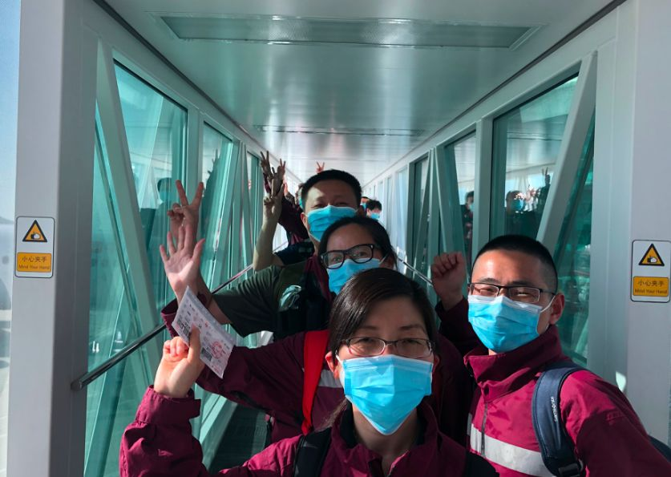
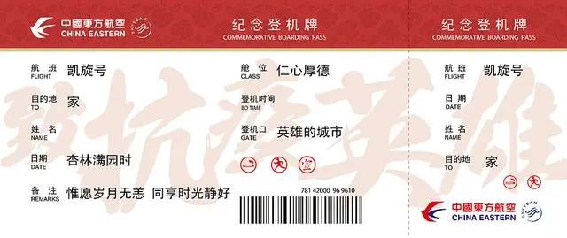
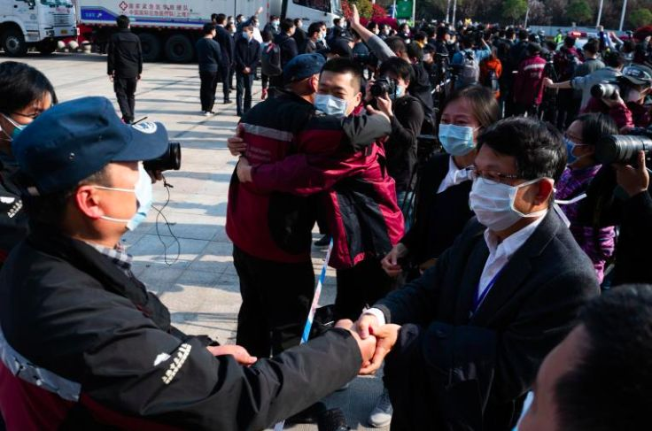
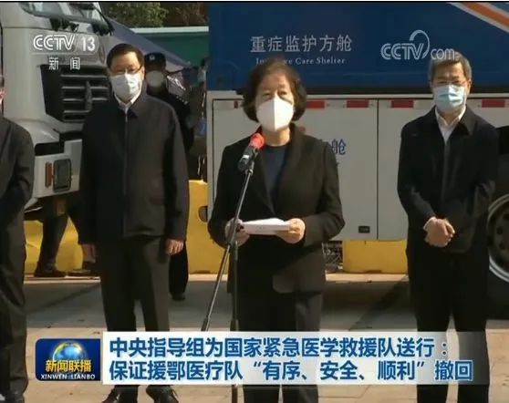
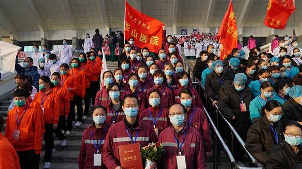
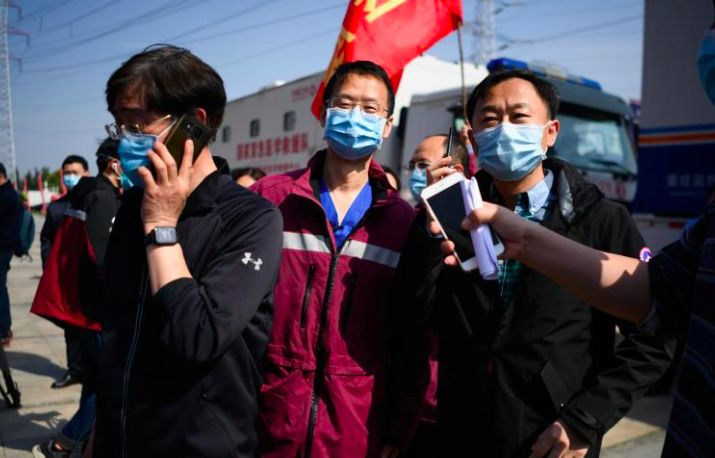
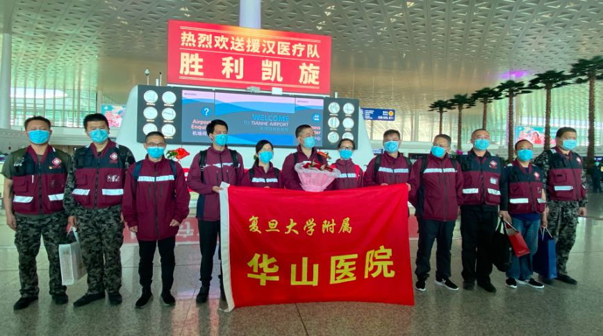
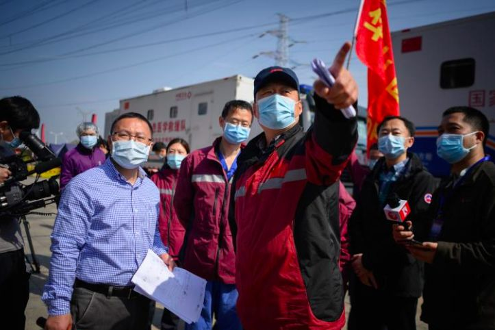
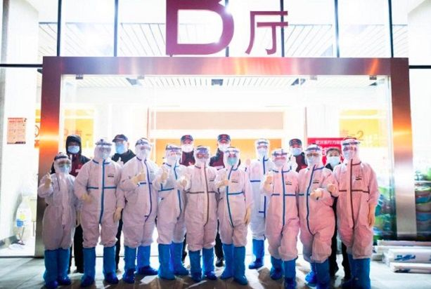

武汉第三医院光谷园区临时ICU关闭，上海重症医生团队24小时床边守护换来高治愈率
原文链接 备份链接 整个2月，是上海第三批医疗队ICU医生团队的攻坚阶段，医生们急于寻找更好的治疗措施，提高治愈率，降低死亡率。 记者 | 黄 祺 昨天（3月16日）是上海市第三批援助湖北医疗队在武汉奋战的第50天，下午1点20分，上海医 …
上海市市委书记李强到机场迎接，代表市委市政府和全市人民欢迎白衣战士平安凯旋。
整理 | 沈 林
3月18日，首批回沪上海援鄂医疗队到家。
下午，包括华山医院12人以及东方医院35人在内的上海医疗队员总计47名，乘坐东航MU9003包机从武汉回到上海。傍晚6点左右，医疗队队员到达虹桥机场，上海市市委书记李强到机场迎接，代表市委市政府和全市人民欢迎白衣战士平安凯旋。

 图片来源 | 援鄂医疗队****
图片来源 | 援鄂医疗队****
此前，就在今天上午，华山医院国家紧急医学救援队车队首先抵沪，通过嘉定花桥收费站道口时，受到公安民警列队敬礼迎接。
视频 | 新民晚报
据悉，为了确保所有人员安全返回，救援队制定了严格规范的消毒流程，在武汉完成了终末消毒：对物品使用1000mg/L有效氯进行消杀，车辆和空气用500mg/L二氧化氯气溶胶喷雾进行消杀。
上海医疗队返沪途中，湖北交警列队敬礼迎接
返回上海后，所有人员在指点隔离点封闭隔离14天并进行医学观察；车辆也要统一封存两周。


医护人员的特殊机票 图片来源 | 援鄂医疗队
当晚，武汉官方发布了32张感恩海报，其中写给上海医疗队的感恩词是：虽隔千里，一江连心。
 图片来源 | 武汉文旅局****
图片来源 | 武汉文旅局****
全国医疗队分批回家
新冠肺炎疫情发生后，从1月24日到3月8日，全国有346支医疗队4.26万人驰援武汉和湖北。其中，上海9支医疗队共1649名医务人员驰援武汉，与全国的医疗队同舟共济，日夜奋战。
3月16日，中央应对新冠肺炎疫情工作领导小组召开会议。会议明确，制定方案有序组织援鄂医务人员分批撤离。

沪鄂两地战友们依依惜别 图片来源 | 上观新闻****
昨天（3月17日）下午，重新恢复武汉客厅展览馆身份的武汉东西湖方舱医院门前，来自各地的援鄂医疗队队员再次重聚。中共中央政治局委员、国务院副总理、中央指导组组长孙春兰为即将离开的部分国家紧急医学救援队送行，中央指导组副组长、中央政法委秘书长陈一新，湖北省委书记应勇也在现场。

孙春兰表示，各医疗队要在保证当地患者救治需要的基础上，有序、安全、顺利撤回，尚有救治任务的医疗队暂不撤回，承担急危重症抢救任务的最后撤回。
值得一提的是，送别仪式结束后，湖北省委书记应勇走到上海医疗队队员面前，笑着说：“之前我在上海送你们，现在我在湖北送你们回。开慢点，注意安全！”
不获全胜，绝不收兵
2月4日出征武汉的华山医院支援武汉国家紧急医学救援队即华山医院第三批支援武汉医疗队，是第一批进驻武昌方舱医院的医疗队，在2月5日即收治了第一批患者。（相关阅读：方舱医院如何应对“应收尽收”？华山医院援鄂医疗队总指挥马昕答疑）

3月10日下午，最后一批49名患者从武汉洪山体育馆武昌方舱医院出院，宣布休舱。在35天时间里，武昌方舱医院渐入佳境，创造了一系列“最”：最早投入使用、最早成立临时党委、最早有患者出院、最早开始进行病人心理疏导、最晚一个休舱。
在武昌方舱医院休舱后，华山医院救援队还进行了各类资料整理，复核了出院患者的病史，进一步完善了方舱医院诊疗常规、院感流程等制度，希望能够为后期国家赈灾与疫情防控提供非常宝贵的实践经验。
3月15日接到撤离指令后，华山医院救援队紧急拟定撤离方案，明确撤离人员，并完成了移动医院撤收的各类准备。

昨天的送别仪式上，华山医院副院长马昕作为华山医院方舱医疗队的领队，也来到现场出席送别会。“今天我们主要是来送别的，还有战友需要再坚守一段时间。”华山医院的冯圣捷说。

华山医院副院长马昕作为华山医院方舱医疗队的领队，来到现场参与送别会 图片来源 | 上观新闻********
原来，除了部分队员先行回沪外，另有26名队员主动留在华中科技大学同济医学院附属同济医院光谷院区的重症病区，继续参加疫情防控工作，大家都抱着“不获全胜，绝不撤退”的决心，坚决打赢湖北保卫战、武汉保卫战。

图片来源｜援鄂医疗队
方舱医院中的上海经验
说起这一个多月来的抗疫经历，东方医院副院长雷撼内心百感交集。一开始，方舱医院内出现了医生忙不过来的情况，为此，雷撼琢磨出了助理医生制度，即选择那些年资高、经验丰富、脑子灵的护士，跟着医生查房，记下并协助落实医嘱；巡视病人，发现问题后及时跟医生反馈，并着手解决；协助医生和患者沟通解释，有效解决了医生不足的问题。（相关阅读：武汉密集建设“方舱医院”透露了什么信息？）

东方医院副院长，东西湖方舱医院上海援鄂医疗队领队雷撼 图片来源 | 上观新闻********
后来，他还提出方舱值班医生责任区、患者对口责任人等制度，有效化解了巨量患者带来的管理难题。据不完全统计，该救援队的医生总共入舱值班99人次，每次6小时。管理过A厅120名患者、B厅413名患者。包括收治新患者入院285名，出院患者157人次。圆满完成了患者零召回、医护零感染、病人零死亡的“三个零”目标。

**图片来源 | 上观新闻******
3月7日下午，武汉东西湖方舱医院休舱，医疗队进舱整理、洗消、晾晒机器设备，如医疗机器人等。直到回沪前夕，医疗队成员仍然收拾帐篷到深夜。


3月16日晚，东方医院援鄂医疗队接到收队指令，重回方舱，开始打包帐篷 图片来源 | 上观新闻********
“每位战友在得知回归的消息后都有点小激动，与家人近两个月的分别，内心深处是渴望团聚的，但想到还有许多同学和战友还在坚守，内心还有些不甘和惆怅。希望回归后能发挥我们的优势，确保上海人民的健康。”东方医院的华晶说。
此外，东方医院国际应急医疗队执行队长孙贵新曾对媒体表示，医疗队最近正联合武汉各医院和各省区市驰援武汉抗击疫情的医疗队，谋划制定《方舱医院中国标准（暂名）》。他说：“希望将这次举全国之力阻击新冠肺炎疫情的经验做法行诸文字，以供世界各国借鉴。”


· 深度好文 | 特朗普及西方政客们热衷炒作“中国病毒”的真正目的
· 还原世卫组织“吹哨”时间轴——“机会之窗”是如何失去的？
新民周刊所有平台稿件， 未经正式授权
一律不得转载、出版、改编或进行
与新民周刊版权相关的其他行为，违者必究


原文链接 备份链接 整个2月，是上海第三批医疗队ICU医生团队的攻坚阶段，医生们急于寻找更好的治疗措施，提高治愈率，降低死亡率。 记者 | 黄 祺 昨天（3月16日）是上海市第三批援助湖北医疗队在武汉奋战的第50天，下午1点20分，上海医 …
原文链接 备份链接 跳广场舞、练瑜伽、打太极、复习备考……每天我们都能从社交媒体上了解到武汉“方舱医院”内患者们的日常生活。这些看似平常的活动，却为紧张的抗疫工作带来了一丝活力与鼓舞。 2月3日晚，武汉市宣布将在武汉国际会展中心、洪山体育 …
原文链接 备份链接 江汉方舱医院护士正在收集患者信息。 图：受访者提供 记者：陈鑫 “ 有人已经出院，有人继续等待，他们正在与新型冠状病毒做最后的博弈。 ” 2月12日晚，45岁的老邓做完第二次核酸复查回到病房。即使戴着口罩也能看出他难掩 …
原文链接 备份链接 方舱医院患者出院还是比较快的，这样周转起来，就可以接收大量的病人，可以做到“应收尽收”。 文 | 黄 祺 13天前，武汉新冠肺炎疫情仿如“暗夜”——社区还有大量感染者未能得到诊断，他们如果得不到及时的治疗，病情很可能 …
原文链接 备份链接 新冠肺炎重症患者死亡率，比SARS低比普通流感高。 记者 | 黄 祺 3月6日下午，武汉市第三医院光谷院区19楼8病区迎来“关门大吉”。 随着上海市第一康复医院高天霖医生一声“关灯！”，11位医护人员身后一片漆黑，高医 …